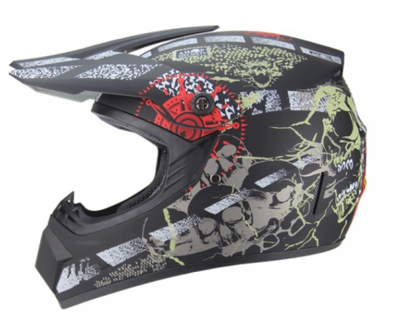

Bukósisak
A motorkerékpár mind a balesetek, mind a halálos kimenetelű balesetek szempontjából a legveszélyesebb közlekedési eszköz, maga a motorkerékpár pedig a többi gépjárműhöz képest csekély passzív védelmet nyújt, ezért a motorkerékpár-vezetők biztonsága szempontjából – vezetéstechnikai ismereteik mellett – kiemelkedő szerepe van a motorkerékpáros személyi védőfelszerelésnek.

legfontosabb védőfelszerelések közé tartozik a bukósisak
Kötelező a bukósisak?
A bukósisak az egyetlen motoros védőfelszerelés, amelynek viselése Magyarországon 1964 második félévétől kötelező.A szabályozás a többi fejlett országban is hasonló.
Mitől véd a bukósisak?
A bukósisak a motoros fejét védi, így elsődleges szerepe az ütközéskor fellépő gyorsulás csökkentése.
Emellett a bukósisaknak megfelelő kilátást, szellőzést, szél-, zaj-, bogárvédelmet és illeszkedést kell biztosítania.
A modern bukósisak héjszerkezete alapvetően egy ütéselvezető és egy ütéselnyelő részből áll: az előbbi elvezeti a sokk energiáját a becsapódási pontból, az utóbbi deformálódva nyeli el az ütközés energiájának egy részét.
Ezek miatt a bukósisak szigorúan egyszer használatos: az egyszer már deformálódott polisztirol újabb ütközést nem tud kivédeni.
A szemet felnyitható plexi védi, ennek hiányában szemüveget kell hordani.
Milyen típusú bukósisakokat ismerünk?
- Legnagyobb szilárdsága a zárt sisakoknak van.
- Kényelmük miatt a nyílt sisakok is elterjedtek, ezek között soknak plexi védelme sincs, ezeken kötelező a szemüveg viselése.
- Az alapvetően zárt, de felnyitható kivitel is népszerű, leginkább a túra motorosok körében elterjedt.
- Az offroad sisakok speciális formájú, napellenzős, plexi nélküli zárt sisakok, melyekhez speciális szemüveget hordanak.
- Vannak sisaknak nem minősülő, a tarkót nem védő termékek is a piacon.
Hosszabb távon a sisak súlya is számít: a könnyebb sisakok kevésbé terhelik meg a nyakat. A sisak kényelmes kiképzése, a fejformához való illeszkedése, a megfelelő méret kiválasztása azért fontos, mert bármilyen fennálló kényelmetlenség elvonja a motoros figyelmét.